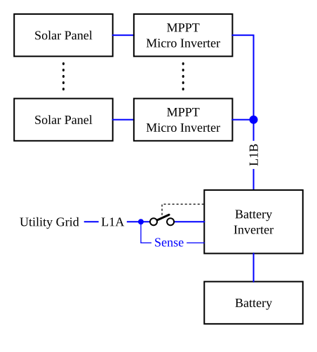

Concepts and ressouces
Every generator in a grid must disconnect from the grid as soon as the grid goes offline. A battery inverter must also disconnect the local grid from the utility grid when the utility grid goes offline, but it can maintain and control the local grid. This mode is called "disconnected mode" or "island mode". In contrast, a grid-tied inverter simply shuts down.
